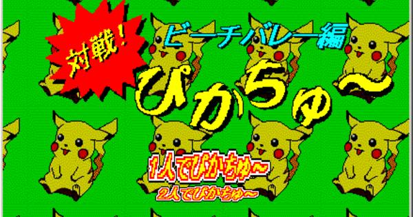

畢業代表場景
即將畢業，最能代表建中生活的、具有最多回憶的、你最依依不捨的究竟是哪些地方呢？快來參與投票吧！(一人上限至多五票，點選倒數天數可連結粉絲專頁精彩文案)
※為驗證身分，請先以新分頁登入建中google帳號(帳號與密碼預設為ck103XXXX@gl.ck.tp.edu.tw+你的身分證字號後8碼，點選至多五個選項後點擊「決定好了」按鈕，按下同意即會自動將此網頁的選項連結表單送出；高一與高二帳號將不列入計算。
畢業歌公開
※手機版網頁請點選「Listen in browser」可直接在網頁內播放
恭喜《行囊》以73票當選！
其他投稿作品與票數統計
票數：42
票數：41
票數：39
票數：8
票數：1
| 名次 | 歌名 | 票數 |
| １ | 行囊 | 73 |
| ２ | 卡其夢想 | 42 |
| ３ | 珍藏 | 41 |
| ４ | Footprints | 39 |
| ５ | Super Nova | 08 |
| ６ | Re/Call of the Red/Chamber | 01 |
| 總計 | 204 |
Re/Call系列活動
活動地點：紅樓穿堂
服務學習活動
以20元進行三次射箭，並獲得對應明信片！
活動時間：05/24(三)~06/03(六)13:00
每日07:30~08:10、12:00~13:00、16:00~17:30
以及每一節下課時間
回憶當鋪
典當與交換建中回憶，喚醒昔日往事！
活動時間：05/24(三)~06/02(五)
每日07:30~08:10、12:00~13:00、16:00~17:30
以及每一節下課時間
ASTRO PARTY
報名已截止，比賽將於05/31(三)12:00~13:00舉行！
皮卡丘打排球
報名已截止，比賽將於06/01(四)12:00~13:00舉行！
Re/Call簡介
人模糊的五官是他從前的倒影，躍動的眸彩是他未來的靈魂，何以能辨此時此刻？我們不若蟬蛻，軀體不斷成長膨脹，心裡卻徒留曩昔的自己蝸居深處。或許有一天你將聽到喃喃低語，似曾相識？時間的座標軸裡沒有過去未來，你只聽得到一陣陣呼喊來回穿梭，沒有目的卻也永無止境。
典禮流程
| 時間 | 活動內容 |
| 16:30 | 畢業生進場 |
| 17:30 | 典禮開幕 |
| 18:30 | 頒獎 |
| 19:50 | 代表致詞 與 頒發畢業證書 |
| 21:00 | 禮成 與 導師時間 |
街頭訪問系列影片
持續發布中，敬請密切關注！
冷笑話 |
典禮預告
敬請密切關注更新！
開場影片
敬請期待畢業典禮當日首映！
交通訊息
校園週遭地圖
校內地圖

※為響應環保節能，請搭乘大眾交通工具；活動當日不提供校內停車
聯絡我們
| 主辦單位 | 臺北市立建國高級中學學務處學生活動組 |
| 臺北市立建國高級中學69屆畢業典禮籌備委員會 | |
| 典禮主題 | Re/Call |
| 典禮時間 | 2017年6月3日(六) |
| 典禮地點 | 臺北市中正區南海路56號 |
| 聯絡電話 | 學生活動組 02-2303-4381 #320 |
| 畢籌主席 鄧致遠 |